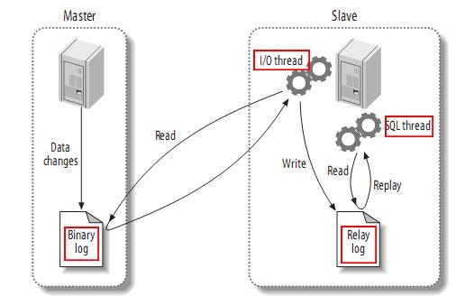
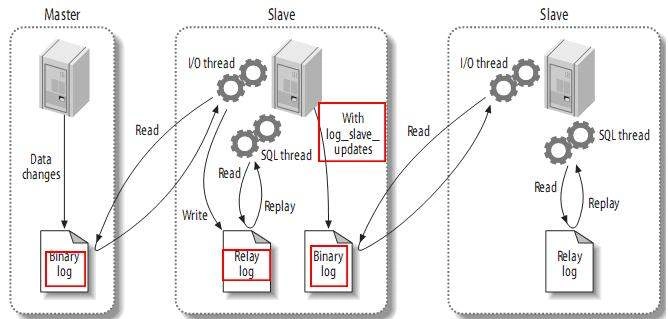
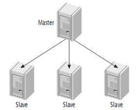
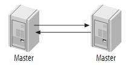
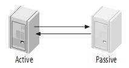
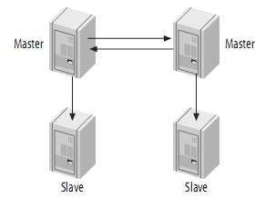

以下文章参考自：：MySql 主从复制及配置实现
Mysql 主从复制的原理和kafka的partition的replication机制很类似，原理互通，大概是因为这种做法确实可以保证分布式系统的可靠性。
一、什么是Mysql主从复制
MySQL主从复制是其最重要的功能之一。主从复制是指一台服务器充当主数据库服务器，另一台或多台服务器充当从数据库服务器，主服务器中的数据自动复制到从服务器之中。对于多级复制，数据库服务器即可充当主机，也可充当从机。MySQL主从复制的基础是主服务器对数据库修改记录二进制日志(bin log)，从服务器通过主服务器的二进制日志自动执行更新。
二、Mysq主从复制的类型
基于语句的复制：
主服务器上面执行的语句在从服务器上面再执行一遍，在MySQL-3.23版本以后支持。
存在的问题：时间上可能不完全同步造成偏差，执行语句的用户也可能不是同一个用户。
基于行的复制：
把主服务器上面改变后的内容直接复制过去，而不关心到底改变该内容是由哪条语句引发的，在MySQL-5.0版本以后引入。
存在的问题：比如一个工资表中有一万个用户，我们把每个用户的工资+1000，那么基于行的复制则要复制一万行的内容，由此造成的开销比较大，而基于语句的复制仅仅一条语句就可以了。
混合类型的复制：
MySQL默认使用基于语句的复制，当基于语句的复制会引发问题的时候就会使用基于行的复制，MySQL会自动进行选择。
在MySQL主从复制架构中，读操作可以在所有的服务器上面进行，而写操作只能在主服务器上面进行。主从复制架构虽然给读操作提供了扩展，可如果写操作也比较多的话（多台从服务器还要从主服务器上面同步数据），单主模型的复制中主服务器势必会成为性能瓶颈。
三、主从复制的作用
1、主数据库出现问题，可以切换到从数据库。
2、可以进行数据库层面的读写分离。读写分离就是在主服务器上修改，数据会同步到从服务器，从服务器只能提供读取数据，不能写入，实现备份的同时也实现了数据库性能的优化，以及提升了服务器安全。
1 | 1）基于程序代码内部实现 |
3、可以在从数据库上进行日常备份
四、Mysql主从复制的工作原理
如下图所示：
[
主服务器上面的任何修改都会保存在二进制日志Binary log里面，从服务器上面启动一个I/O thread（实际上就是一个主服务器的客户端进程），连接到主服务器上面请求读取二进制日志，然后把读取到的二进制日志写到本地的一个Realy log（中继日志）里面。从服务器上面开启一个SQL thread定时检查Realy log，如果发现有更改立即把更改的内容在本机上面执行一遍。
如果一主多从的话，这时主库既要负责写又要负责为几个从库提供二进制日志。此时可以稍做调整，将二进制日志只给某一从，这一从再开启二进制日志并将自己的二进制日志再发给其它从。或者是干脆这个从不记录只负责将二进制日志转发给其它从，这样架构起来性能可能要好得多，而且数据之间的延时应该也稍微要好一些。工作原理图如下：
[
实际上在老版本的MySQL主从复制中Slave端并不是两个进程完成的，而是由一个进程完成。但是后来发现这样做存在较大的风险和性能问题，主要如下：
1 | 首先，一个进程会使复制bin-log日志和解析日志并在自身执行的过程成为一个串行的过程，性能受到了一定的限制，异步复制的延迟也会比较长。 |
为了提高复制的性能并解决存在的风险，后面版本的MySQL将Slave端的复制动作交由两个进程来完成。提出这个改进方案的人是Yahoo!的一位工程师“Jeremy Zawodny”。这样既解决了性能问题，又缩短了异步的延时时间，同时也减少了可能存在的数据丢失量。
当然，即使是换成了现在这样两个线程处理以后，同样也还是存在slave数据延时以及数据丢失的可能性的，毕竟这个复制是异步的。只要数据的更改不是在一个事务中，这些问题都是会存在的。如果要完全避免这些问题，就只能用MySQL的cluster来解决了。不过MySQL的cluster是内存数据库的解决方案，需要将所有数据都load到内存中，这样就对内存的要求就非常大了，对于一般的应用来说可实施性不是太大。
还有一点要提的是MySQL的复制过滤(Replication Filters)，复制过滤可以让你只复制服务器中的一部分数据。有两种复制过滤：在Master上过滤二进制日志中的事件；在Slave上过滤中继日志中的事件。如下：
[
配置Master的my.cnf文件(关键性的配置)/etc/my.cnf
1 | log-bin=mysql-bin |
配置Slave的my.cnf文件(关键性的配置)/etc/my.cnf
1 | log-bin=mysql-bin |
网友说replicate-do-db的使用中可能会出些问题（http://blog.knowsky.com/19696…），自己没有亲自去测试。猜想binlog-do-db参数用于主服务器中，通过过滤Binary Log来过滤掉配置文件中不允许复制的数据库，也就是不向Binary Log中写入不允许复制数据的操作日志；而replicate-do-db用于从服务器中，通过过滤Relay Log来过滤掉不允许复制的数据库或表，也就是执行Relay Log中的动作时不执行那些不被允许的修改动作。这样的话，多个从数据库服务器的情况：有的从服务器既从主服务器中复制数据，又做为主服务器向另外的从服务器复制数据，那它的配置文件中应该可以同时存在binlog-do-db、replicate-do-db这两个参数才对。一切都是自己的预测，关于binlog-do-db、replicate-do-db的具体使用方法还得在实际开发中一点点摸索才可以。
网上有说，复制时忽略某些数据库或者表的操作最好不要在主服务器上面进行，因为主服务器忽略之后就不会再往二进制文件中写了，但是在从服务器上面虽然忽略了某些数据库但是主服务器上面的这些操作信息依然会被复制到从服务器上面的relay log里面，只是不会在从服务器上面执行而已。我想这个意思应该是建议在从服务器中设置replicate-do-db，而不要在主服务器上设置binlog-do-db。
另外，不管是黑名单（binlog-ignore-db、replicate-ignore-db）还是白名单（binlog-do-db、replicate-do-db）只写一个就行了，如果同时使用那么只有白名单生效。
五、Mysql主从复制的过程
MySQL主从复制的两种情况：同步复制和异步复制，实际复制架构中大部分为异步复制。
复制的基本过程如下：
- Slave上面的IO进程连接上Master，并请求从指定日志文件的指定位置（或者从最开始的日志）之后的日志内容。
- Master接收到来自Slave的IO进程的请求后，负责复制的IO进程会根据请求信息读取日志指定位置之后的日志信息，返回给Slave的IO进程。返回信息中除了日志所包含的信息之外，还包括本次返回的信息已经到Master端的bin-log文件的名称以及bin-log的位置。
- Slave的IO进程接收到信息后，将接收到的日志内容依次添加到Slave端的relay-log文件的最末端，并将读取到的Master端的 bin-log的文件名和位置记录到master-info文件中，以便在下一次读取的时候能够清楚的告诉Master“我需要从某个bin-log的哪个位置开始往后的日志内容，请发给我”。
- Slave的Sql进程检测到relay-log中新增加了内容后，会马上解析relay-log的内容成为在Master端真实执行时候的那些可执行的内容，并在自身执行。
六、Mysql主从复制的具体配置
复制通常用来创建主节点的副本，通过添加冗余节点来保证高可用性，当然复制也可以用于其他用途，例如在从节点上进行数据读、分析等等。在横向扩展的业务中，复制很容易实施，主要表现在在利用主节点进行写操作，多个从节点进行读操作，MySQL复制的异步性是指：事物首先在主节点上提交，然后复制给从节点并在从节点上应用，这样意味着在同一个时间点主从上的数据可能不一致。异步复制的好处在于它比同步复制要快，如果对数据的一致性要求很高，还是采用同步复制较好。
最简单的复制模式就是一主一从的复制模式了，这样一个简单的架构只需要三个步骤即可完成：
（1）建立一个主节点，开启binlog，设置服务器id；
（2）建立一个从节点，设置服务器id；
（3）将从节点连接到主节点上。
下面我们开始操作，以MySQL 5.5为例，操作系统Ubuntu12.10，Master 10.1.6.159 Slave 10.1.6.191。
1 | apt-get install mysql-server |
Master机器
Master上面开启binlog日志，并且设置一个唯一的服务器id，在局域网内这个id必须唯一。二进制的binlog日志记录master上的所有数据库改变，这个日志会被复制到从节点上，并且在从节点上回放。修改my.cnf文件，在mysqld模块下修改如下内容：
1 | [mysqld] |
log_bin设置二进制日志所产生文件的基本名称，二进制日志由一系列文件组成，log_bin的值是可选项，如果没有为log_bin设置值，则默认值是：主机名-bin。如果随便修改主机名，则binlog日志的名称也会被改变的。server-id是用来唯一标识一个服务器的，每个服务器的server-id都不一样。这样slave连接到master后，会请求master将所有的binlog传递给它，然后将这些binlog在slave上回放。为了防止权限混乱，一般都是建立一个单独用于复制的账户。
binlog是复制过程的关键，它记录了数据库的所有改变，通常即将执行完毕的语句会在binlog日志的末尾写入一条记录，binlog只记录改变数据库的语句，对于不改变数据库的语句则不进行记录。这种情况叫做基于语句的复制，前面提到过还有一种情况是基于行的复制，两种模式各有各的优缺点。
Slave机器
slave机器和master一样，需要一个唯一的server-id。
1 | [mysqld] |
连接Slave到Master
在Master和Slave都配置好后，只需要把slave只想master即可
1 | change master to master_host='10.1.6.159',master_port=3306,master_user='rep', |
接下来在master上做一些针对改变数据库的操作，来观察slave的变化情况。在修改完my.cnf配置重启数据库后，就开始记录binlog了。可以在/var/log/mysql目录下看到一个mysql-bin.000001文件，而且还有一个mysql-bin.index文件，这个mysql-bin.index文件是什么？这个文件保存了所有的binlog文件列表，但是我们在配置文件中并没有设置改值，这个可以通过log_bin_index进行设置，如果没有设置改值，则默认值和log_bin一样。在master上执行show binlog events命令，可以看到第一个binlog文件的内容。
注意：上面的sql语句是从头开始复制第一个binlog，如果想从某个位置开始复制binlog，就需要在change master to时指定要开始的binlog文件名和语句在文件中的起点位置，参数如下：master_log_file和master_log_pos。
1 | mysql> show binlog events\G |
- Log_name 是二进制日志文件的名称，一个事件不能横跨两个文件
- Pos 这是该事件在文件中的开始位置
- Event_type 事件的类型，事件类型是给slave传递信息的基本方法，每个新的binlog都已Format_desc类型开始，以Rotate类型结束
- Server_id 创建该事件的服务器id
- End_log_pos 该事件的结束位置，也是下一个事件的开始位置，因此事件范围为Pos~End_log_pos-1
- Info 事件信息的可读文本，不同的事件有不同的信息
示例
在master的test库中创建一个rep表，并插入一条记录。
1 | create table rep(name var); |
flush logs命令强制轮转日志，生成一个新的二进制日志，可以通过show binlog events in ‘xxx’来查看该二进制日志。可以通过show master status查看当前正在写入的binlog文件。这样就会在slave上执行相应的改变操作。
上面就是最简单的主从复制模式，不过有时候随着时间的推进，binlog会变得非常庞大，如果新增加一台slave，从头开始复制master的binlog文件是非常耗时的，所以我们可以从一个指定的位置开始复制binlog日志，可以通过其他方法把以前的binlog文件进行快速复制，例如copy物理文件。在change master to中有两个参数可以实现该功能，master_log_file和master_log_pos，通过这两个参数指定binlog文件及其位置。我们可以从master上复制也可以从slave上复制，假如我们是从master上复制，具体操作过程如下：
（1）为了防止在操作过程中数据更新，导致数据不一致，所以需要先刷新数据并锁定数据库：flush tables with read lock。
（2）检查当前的binlog文件及其位置：show master status。
1 | mysql> show master status\G |
（3）通过mysqldump命令创建数据库的逻辑备分：mysqldump –all-databases -hlocalhost -p >back.sql。
（4）有了master的逻辑备份后，对数据库进行解锁：unlock tables。
（5）把back.sql复制到新的slave上，执行：mysql -hlocalhost -p 把master的逻辑备份插入slave的数据库中。
（6）现在可以把新的slave连接到master上了，只需要在change master to中多设置两个参数master_log_file=’mysql-bin.000003’和master_log_pos=’107’即可，然后启动slave：start slave，这样slave就可以接着107的位置进行复制了。
1 | change master to master_host='10.1.6.159',master_port=3306,master_user='rep', |
有时候master并不能让你锁住表进行复制，因为可能跑一些不间断的服务，如果这时master已经有了一个slave，我们则可以通过这个slave进行再次扩展一个新的slave。原理同在master上进行复制差不多，关键在于找到binlog的位置，你在复制的同时可能该slave也在和master进行同步，操作如下：
（1）为了防止数据变动，还是需要停止slave的同步：stop slave。
（2）然后刷新表，并用mysqldump逻辑备份数据库。
（3）使用show slave status查看slave的相关信息，记录下两个字段的值Relay_Master_Log_File和Exec_Master_Log_Pos，这个用来确定从后面哪里开始复制。
（4）对slave解锁，把备份的逻辑数据库导入新的slave的数据库中，然后设置change master to，这一步和复制master一样。
七、深入了解Mysql主从配置
一主多从
由一个master和一个slave组成复制系统是最简单的情况。Slave之间并不相互通信，只能与master进行通信。在实际应用场景中，MySQL复制90%以上都是一个Master复制到一个或者多个Slave的架构模式，主要用于读压力比较大的应用的数据库端廉价扩展解决方案。
[
在上图中，是我们开始时提到的一主多从的情况，这时主库既要负责写又要负责为几个从库提供二进制日志。这种情况将二进制日志只给某一从，这一从再开启二进制日志并将自己的二进制日志再发给其它从，或者是干脆这个从不记录只负责将二进制日志转发给其它从，这样架构起来性能可能要好得多，而且数据之间的延时应该也稍微要好一些。
主主复制
[
上图中，Master-Master复制的两台服务器，既是master，又是另一台服务器的slave。这样，任何一方所做的变更，都会通过复制应用到另外一方的数据库中。在这种复制架构中，各自上运行的不是同一db，比如左边的是db1,右边的是db2，db1的从在右边反之db2的从在左边，两者互为主从，再辅助一些监控的服务还可以实现一定程度上的高可以用。
主动—被动模式的Master-Master(Master-Master in Active-Passive Mode)
[
上图中，这是由master-master结构变化而来的，它避免了M-M的缺点，实际上，这是一种具有容错和高可用性的系统。它的不同点在于其中只有一个节点在提供读写服务，另外一个节点时刻准备着，当主节点一旦故障马上接替服务。比如通过corosync+pacemaker+drbd+MySQL就可以提供这样一组高可用服务，主备模式下再跟着slave服务器，也可以实现读写分离。
带从服务器的Master-Master结构(Master-Master with Slaves)
[
这种结构的优点就是提供了冗余。在地理上分布的复制结构，它不存在单一节点故障问题，而且还可以将读密集型的请求放到slave上。
早前的MySQL复制只能是基于异步来实现，从MySQL-5.5开始，支持半自动复制。在以前的异步（asynchronous）复制中，主库在执行完一些事务后，是不会管备库的进度的。如果备库处于落后，而更不幸的是主库此时又出现Crash（例如宕机），这时备库中的数据就是不完整的。简而言之，在主库发生故障的时候，我们无法使用备库来继续提供数据一致的服务了。Semisynchronous Replication(半同步复制)则一定程度上保证提交的事务已经传给了至少一个备库。Semi synchronous中，仅仅保证事务的已经传递到备库上，但是并不确保已经在备库上执行完成了。
此外，还有一种情况会导致主备数据不一致。在某个session中，主库上提交一个事务后，会等待事务传递给至少一个备库，如果在这个等待过程中主库Crash，那么也可能备库和主库不一致，这是很致命的。如果主备网络故障或者备库挂了，主库在事务提交后等待10秒（rpl_semi_sync_master_timeout的默认值）后，就会继续。这时，主库就会变回原来的异步状态。
MySQL在加载并开启Semi-sync插件后，每一个事务需等待备库接收日志后才返回给客户端。如果做的是小事务，两台主机的延迟又较小，则Semi-sync可以实现在性能很小损失的情况下的零数据丢失。